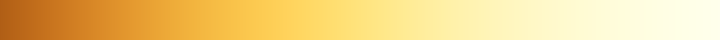

UE5 画质升级 · 色调映射（Tonemapper）
为什么切到 ACES 2.0，画面会变灰？
Filmic 与 Standard ACES（ACES 2.0）的差异、变灰的原因、短期与长期方案——写给美术的版本。
一分钟看懂
切到 Standard ACES 之后，整体亮度其实没变：18% 中灰在两种模式下都显示为像素值 ≈ 118。变的是两头和颜色：暗部被抬亮、亮部被压低、颜色变淡。对比度一降，画面就“灰”了。
造成这种变化的是四件事，影响从大到小：
- ①显示编码对不上（影响最大，一行配置就能修）。在后处理体积（PPV）里选 Standard ACES 后，UE 默认按 BT.1886（Gamma 2.4，暗室看电视的标准）输出；电脑和手机屏幕按 sRGB（约 Gamma 2.2）显示，结果暗部整体被抬亮。
- ②ACES 2.0 的曲线本身更柔。中间调对比度比 Filmic 低约 27%，到 99% 白需要的亮度是 Filmic 的 3 倍多，相当于把空间留给了高光层次。所以同一盏灯、同一张贴图，亮部会更暗、更平。
- ③颜色处理方式不同。Filmic 对 R、G、B 三个通道分别压缩，会顺带加饱和，并让亮色偏色（火焰发黄、蓝光发青）。ACES 2.0 保持色相，代价是正常亮度下颜色淡一些，色卡平均彩度低约 14%。
- ④Filmic 专属参数全部失效：Film Slope / Toe / Shoulder / Black Clip / White Clip、Blue Correction、Tone Curve Amount、Color Grading LUT 贴图。工程正式内容里有 3 张地图改过 Film 参数，1 张用了 LUT 贴图。
短期：先把画面救回来
- 不急着切：存量关卡继续用 Filmic，零成本。
- 要切：DefaultEngine.ini 加一行
r.LUT.TonemappingSDRInvEOTF=0，把编码改回 sRGB。再按需补偿：曝光 +0.1 档、全局对比度 ×1.15、饱和度 ×0.95。 - 这样与原 Filmic 画面的平均色差能从 4.8 降到 2.8（只改编码），再降到 1.8（加补偿）。
长期：以 ACES 2.0 为基准重打光
- 正好配合 PBR 重打光：统一“ACES 2.0 + sRGB 编码”，建一张标定场景，用 18% 灰卡（BaseColor 0.18）把正确曝光定死。
- 本工程曝光锁定 ×1，PPV 的曝光补偿不生效：亮度靠灯光，主光照到灰卡上约 π lux 就是正确曝光。
- 自发光、特效、天空按档位重调：ACES 下亮部要多给约 1 档。
- 项目的 Look 用 Color Grading 预设来做；LUT 贴图在 ACES 下不生效。
- DCC 预览要对齐 UE 额外乘的 ×1.5（+0.58 档）。
先看效果：同一画面的四种输出
左边是原截图（Filmic），右边可以切换三种 ACES 输出。拖动中线对比。
做法：把 Filmic 截图按 UE 源码的 Filmic 公式反推回场景亮度，再送进 ACES 2.0 计算。UI 已裁掉。地牢场景 0.03% 的像素反推误差超过 2 个像素值；选角场景火焰区约 8% 的像素有 2–6 个像素值误差，不影响结论。这是近似效果，最终以引擎内切换为准。
| 指标（地牢 / 选角） | Filmic | ACES 默认 | + sRGB 编码 | + 补偿 |
|---|---|---|---|---|
| 最暗 5% 区域的感知亮度（0 黑 – 100 白） | 13.7 / 21.5 | 19.1 / 28.0 | 13.3 / 23.2 | 10.6 / 20.5 |
| 最亮 5% 区域的感知亮度 | 51.9 / 90.4 | 53.7 / 85.2 | 51.0 / 84.5 | 52.0 / 87.7 |
| 平均彩度（越大越艳） | 5.43 / 6.69 | 4.96 / 6.08 | 5.34 / 6.47 | 5.51 / 6.43 |
| 与 Filmic 的平均色差（越小越像） | 0 / 0 | 5.0 / 5.2 | 1.4 / 3.2 | 1.2 / 2.1 |
感知亮度、彩度、色差都在 OKLab 感知色彩空间里计算（×100）。色差的经验尺度：≤ 2 要并排仔细看才分得出，4–5 一眼就能看出来。
为什么会变灰：拆成四个原因
一帧画面从渲染到屏幕要经过下面几步。圆圈数字标出了四个原因各自发生在哪一步。
①显示编码：给显示器的“翻译方式”变了（影响最大）
渲染算出来的是“光有多亮”。最后一步要把它翻译成 0–255 的像素值发给显示器，显示器再按自己的规则翻译回亮度。两边必须用同一本“字典”：
- Filmic 按 sRGB 编码；电脑屏幕、手机屏幕按 sRGB 显示：配对。
- Standard ACES 在 UE 里默认按 BT.1886（Gamma 2.4）编码。这是暗室里看电视、调色监视器的标准，而普通屏幕仍按约 2.2 解码：不配对。同样的暗部亮度被编成更大的像素值，显示出来就亮了，阴影发灰。
引擎源码的说明写得很直白：“The default for ACES is BT.1886 to prioritize compatibility between SDR and Rec. 2100 for HDR.” Epic 是为了让 SDR 和 HDR 电视的观感一致才选了 BT.1886；但我们的玩家绝大多数用的是 sRGB 屏幕。这个默认值只在 PPV 选了 Standard ACES 时启用（Filmic 一直是 sRGB）。可以用 r.LUT.TonemappingSDRInvEOTF 改：0 = sRGB，1 = BT.1886。
灰阶曲线：场景亮度 → 屏幕像素值
横轴是比 18% 中灰亮或暗几档（1 档 = 亮度 ×2），纵轴是最终发给屏幕的像素值（0–255）。把鼠标放到图上可以看每档的具体数值。
同样的灰阶条，在你的屏幕上直接看
具体数字：比中灰暗 3 档 / 5 档的地方，Filmic 的屏幕亮度是 0.65% / 0.06%，ACES 默认是 1.62% / 0.33%（×2.5 / ×5.2）。改成 sRGB 编码后是 0.81% / 0.05%，与 Filmic 基本一致。
r.LUT.TonemappingMethod 1 只会把曲线换成 ACES，编码仍然跟着 PPV 走（源码里编码默认值读的是 PPV 的设置，不是这个控制台变量）。所以在控制台里切，看到的是“ACES + sRGB”；在 PPV 里切，看到的是“ACES + BT.1886”，两种方法的结果不一样。反过来，PPV 选了 ACES、控制台强制 Filmic 时，Filmic 也会被按 BT.1886 编码，同样发灰。团队讨论“ACES 好不好看”之前，先统一切换方法（下面有命令）。
②曲线形状：ACES 2.0 更柔，把空间留给了高光
编码修好之后（上图青色线），暗部和 Filmic 基本重合，但从中灰往上 ACES 2.0 一直更低、更平：
- 中间调对比度：中灰附近每亮 1 档，Filmic 增加 51.5 个像素值，ACES 2.0 只增加 37.5，低 27%。
- 高光到白的距离：Filmic 在比中灰亮 +5.2 档（中灰的 37 倍）时就到了 99% 白；ACES 2.0 要到 +7.0 档（中灰的 128 倍）。比中灰亮 2 档的地方，Filmic 是 208.5，ACES 是 183.8。
- 为什么中灰刚好一样？UE 在 ACES 前面额外乘了 1.5（
r.HDR.Aces.SceneColorMultiplier，约 +0.58 档），配合 BT.1886 编码，正好让中灰与 Filmic 对齐（117.9 vs 117.6）。可见 Epic 有意保证“整体亮度不变”，只是两头对不齐。
换成美术的直觉：中间调不用动；想让亮部像以前一样亮，ACES 下要多给能量，越亮的地方要多给得越多：
| 想在屏幕上达到的像素值 | Filmic 需要（档） | ACES + sRGB 需要（档） | 差多少 | 相当于强度 × |
|---|---|---|---|---|
| 118（中灰） | +0.1 | +0.3 | +0.2 | 1.1 |
| 180（亮面） | +1.3 | +1.9 | +0.6 | 1.5 |
| 220（高光） | +2.5 | +3.4 | +0.9 | 1.9 |
| 245（接近白） | +4.1 | +5.3 | +1.2 | 2.3 |
“档”指相对 18% 中灰的曝光档位。表里的倍数是灰阶的结果；彩色自发光还会受原因 ③ 影响。
这不是 ACES 的缺陷，而是取舍。Filmic 很快把亮部压到白，画面“实”、出片快，但强光、火焰、天空容易糊成一片。ACES 2.0 给高光留了 3 倍多的余量，层次更多，也是它能自然适配 HDR 屏幕的原因。代价是默认观感更平，需要在上面自己做 Look。
③颜色：Filmic 逐通道压缩，ACES 2.0 保色相
Filmic 把 R、G、B 三个通道各自套同一条 S 曲线。亮的通道先被压平，暗的通道后被压，所以一个颜色越亮，就越往黄、青、品红偏，同时中等亮度的颜色被“顺带”加了饱和。ACES 2.0 在色貌空间里只压亮度，彩度单独控制，所以色相基本不变，亮到头是“变白”而不是“变色”。下面每一行是同一个颜色从 −2 档逐渐提亮到 +8 档：
从 −2 档提亮到 +6 档，色相最多偏了多少度
数值越大，表示越亮时颜色变得越多（OKLCH 色相角）。
Filmic 下火焰橙最多偏 47°，魔法蓝偏 38°，血红偏 17°，奥术紫偏 15°；ACES 2.0 全部不超过 5°。
ColorChecker 色卡在正确曝光下的样子
平均彩度随曝光的变化（色卡 18 个彩色块）
正确曝光附近 ACES 2.0 更淡；但比正确曝光亮 1.5 档以上时，ACES 反而比 Filmic 更保色。Filmic 的亮色会很快被压成白色或黄色。
④这些 Filmic 设置在 ACES 下不生效
枚举的提示文字写着 “Film settings do not apply to this method”。实际上不止 Film 参数，源码里 ACES 分支跳过了整个 Filmic 处理函数：
| 设置 | Standard ACES 下 | 工程里用到的地方（正式内容 Content/Art） |
|---|---|---|
| Film Slope / Toe / Shoulder / Black Clip / White Clip | 不生效 | 3 张地图改过 Film Slope：HD_MiLiuZhiHuan000_Landscape、YongShuangBingPo_Landscape、YongShuangBingPo_Landscape_02（全工程共 29 个包设置过 Film 参数，其余是测试地图和插件资源） |
| Color Grading LUT（LUT 贴图）及其强度 | 不生效 | 1 张：SD_GeBuLinYingDi02_Landscape（T_PC_BeiFangShanDi_Lut_01_01）。另有 18 张勾了 LUT 覆盖但没指定贴图，不受影响 |
| Blue Correction、Tone Curve Amount | 不生效 | 只有插件蓝图 BP_FastStylizedProceduralSky 设置过 |
r.Color.Min / Mid / Max、显示 Gamma 微调 | 不生效 | 工程未设置 |
| 白平衡、Color Grading（全局 / 暗部 / 中间调 / 高光）、Expand Gamut、Scene Color Tint、Bloom、暗角、颗粒、淡入淡出 | 仍生效 | 21 个改过饱和度，4 个改过对比度。参数仍然生效，但曲线变了，同样的数值视觉效果会不同 |
| 曝光补偿（Exposure Compensation） | 与 Tonemapper 无关：本工程曝光锁定 ×1，Filmic 和 ACES 下都不生效 | 27 个改过，在游戏和编辑器的主视口里都不起作用（原因和 SceneCapture 例外见长期方案第 ③ 步） |
XZ_PC_YuJinZhiXiBiNanSuo200_Landscape（主城 PC 地形子关卡）和 LoginScene_PC，都在 10-23 保存，应该是你测试时留下的。如果暂时不切，记得改回 Filmic 或者不要提交。
四个原因各占多少
用“与原 Filmic 画面的平均色差”来衡量，依次叠加修正：
与原 Filmic 画面的平均色差（越小越像）
地牢和选角是工程截图；色卡取 −1 / 0 / +1 档三种曝光。
在暗场景（地牢）里，编码一项就占了约 72% 的差异（5.0 → 1.4）。在强光特效场景（选角）里，编码只占约 37%（5.2 → 3.2），剩下的主要来自曲线和颜色。色卡几乎全是中间调和亮色，所以改编码帮助很小（4.4 → 4.1），要靠补偿（→ 2.3）。剩下的差异是 ACES 2.0 本来的样子：更多高光层次、颜色不跑偏。这部分不需要、也不应该完全“修”回去。
短期方案：不重做美术，先把画面救回来
目标：在 PBR 重打光完成之前，既可以继续用 Filmic，也可以先切 ACES 而不让画面变灰。
- 先决定要不要现在切 存量关卡的灯光、材质、特效都是在 Filmic 下调的，继续用 Filmic 是零成本、零风险的选择。建议只在新做或重打光的关卡里用 ACES，旧关卡等重打光时再切。下面的 2–5 步是“必须现在切”时的做法。
- 必做：把输出编码改回 sRGB
解决“暗部发灰”这个最大的问题，只影响 Standard ACES，Filmic 不受影响：
; Config/DefaultEngine.ini [/Script/Engine.RendererSettings] ; Standard ACES 在 SDR 下按 sRGB 编码（默认 -1：PPV 选 ACES 时用 BT.1886 / Gamma 2.4，普通屏幕暗部发灰） r.LUT.TonemappingSDRInvEOTF=0效果：与 Filmic 的平均色差 4.8 → 2.8（地牢场景 5.0 → 1.4）。这个变量每帧读取，编辑器里用控制台输入同名命令可以立即看到效果。 - 可选：把观感补偿到接近 Filmic
下面三个数是用两张工程截图加色卡拟合出来的，与 Filmic 最接近（平均色差 2.8 → 1.8）：
参数 在哪里改 值 作用 曝光 r.HDR.Aces.SceneColorMultiplier=1.6（默认 1.5，只影响 ACES）；或者 PPV → Color Grading → Global → Gain 填 ×1.07。PPV 的 Exposure Compensation 在本工程不生效，别用它+0.1 档 中灰对齐 Filmic 对比度 PPV → Color Grading → Global → Contrast（亮度 Y 那一项） ×1.15 补回中间调对比度和亮部 饱和度 PPV → Color Grading → Global → Saturation（Y） ×0.95 对比度加上去后饱和度会略高，轻微回收 “×”的意思是在原值上乘：UE 的 Contrast 是以 0.18 为支点的幂运算，Saturation 是围绕亮度的插值，两次叠加正好等于两个系数相乘。所以已经改过对比度、饱和度的地图（正式内容里分别有 4 个和 21 个）用“原值 × 系数”，没改过的直接填系数。补偿后的灰阶曲线是第一张图里的黄色线。
备选：如果以后要做 HDR 输出，并且要求 SDR/HDR 观感严格一致，也可以保留 BT.1886 编码，改用曝光 −0.1 档（SceneColorMultiplier 1.4）、对比度 ×1.3、饱和度 ×0.95，色差为 1.4，数值上更接近，但对比度要加得更猛。对 PC / 手机项目，第 2 步的 sRGB 编码在原理上更正确，推荐用它。
- 检查清单：切换前逐项看一遍
- 3 张改过 Film Slope 的正式地图（HD_MiLiuZhiHuan000、YongShuangBingPo ×2）：这个参数失效后要用 Contrast 重新找感觉。
- SD_GeBuLinYingDi02 的 LUT 贴图会失效：要么用 Color Grading 重调，要么这张图先留在 Filmic。
- 火焰、魔法、刀光等高饱和特效：颜色不再偏黄、偏青，亮度也偏暗，需要特效同学确认。
- 天空、自发光、灯光高光：要达到原来的亮度大约要多 1 档（见原因 ② 的表）。
- 用 SceneCapture 渲到 UI 的画面（角色展示、头像）同样走 Tonemapper，也会变。
- 前面提到的 2 张已经存成 ACES 的地图。
- 统一的 A/B 对比方法（编辑器 / PIE 控制台）
r.LUT.TonemappingMethod 0 // 强制 Filmic r.LUT.TonemappingMethod 1 // 强制 Standard ACES（ACES 2.0） r.LUT.TonemappingSDRInvEOTF 0 // 编码 = sRGB r.LUT.TonemappingSDRInvEOTF 1 // 编码 = BT.1886（= 在 PPV 里选 ACES 时的默认） r.HDR.Aces.SceneColorMultiplier 1.6 // ACES 曝光补偿（默认 1.5） r.LUT.TonemappingMethod -1 // 恢复：跟随 PPV r.LUT.TonemappingSDRInvEOTF -1 // 恢复：跟随默认规则
两个变量要一起设，才能确定看到的是哪种组合。“ACES 默认”是
1 / 1，“ACES + sRGB”是1 / 0，Filmic 是0 / 0。 - 不要用局部后处理体积来切换
Tonemapping Method 是“开关型”属性，不做混合：只要体积权重大于 0 就整个切过去（源码
SET_PP(TonemappingMethod)）。角色走进带 Blend Radius 的局部体积时，画面会瞬间跳变。请在每张图的全局（Unbound）PPV 上整图切换。
长期方案：以 ACES 2.0 为基准的 PBR 重打光
既然美术效果本来就要按 PBR 重新打光，这是切到 ACES 2.0 最合适的时机。目标是让“美术在屏幕上看到的”和“物理上应该是的”一致，再在上面叠项目自己的风格。和灯光、曝光有关的步骤（②③④⑤⑦⑨）都配了图解和逐步操作。
一句话：先标定，再创作。用灰卡把“正确曝光”定死，让所有材质、灯光、特效在同一把尺子上比较；每张图想要的明暗气氛（“正常曝光”）写成“相对正确曝光 ±几档”。
▶先动手：4 个小实验，从操作反推原理
不需要摄影基础，在一张空关卡里 10 分钟就能做完；后面所有规范都能和这几个读数对上。实验统一用 ACES 2.0 + sRGB 编码（控制台 r.LUT.TonemappingMethod 1、r.LUT.TonemappingSDRInvEOTF 0），并临时关掉工程默认的局部曝光（r.DefaultFeature.LocalExposure.HighlightContrastScale 1、r.DefaultFeature.LocalExposure.ShadowContrastScale 1，原因见第 ③ 步），读到的数才和下面一致。
118% 灰卡在 UE 里是哪个数
767676 回车。808080（PS 里正中间的 128），数值变成 0.216。2把灰卡放到灯下，读出“正确曝光”
3灯光翻倍，还是 BaseColor 翻倍
4同一个场景值，换两种 Tonemapper
r.LUT.TonemappingMethod 0（Filmic）和 1（ACES），分别读两块卡。- 定死输出标准
全项目统一用 Standard ACES（
r.HDR.Aces.Version=2）加 sRGB 编码（r.LUT.TonemappingSDRInvEOTF=0），编辑器视口、PIE、打包包体保持一致。移动端走的是同一套 LUT 生成代码，结论通用。美术的显示器统一校准到 sRGB（Gamma 2.2、D65 白点）。0816243248显示器自检：正常亮度下应该能分清 8 和 16 两块；连 16 和 24 都分不清，说明屏幕偏暗或对比度太高，照着它打的暗部会偏亮。
- 做一张“标定场景”（Look-dev 地图）
它的作用就像摄影棚里的灰卡和色卡：用一组反射率已知的道具，把“灯光对不对、曝光对不对”变成可以读数的问题。所有灯光、材质、特效先在这里过一遍，再进关卡。
放什么（材质参数照抄）
18% 灰卡 ×2（一块平放，一块竖立）BaseColor 0.18（Hex sRGB 767676）· Metallic 0 · Specular 0 · Roughness 1测正确曝光。主光下读数应为 0.18。白卡BaseColor 0.87（F0F0F0，非金属允许的最亮）· 其余同灰卡看亮部会不会糊、白色够不够白。读数应为 0.87。黑卡BaseColor 0.032（323232，非金属的常用下限）· 其余同灰卡看暗部有没有层次。读数应为 0.032。哑光灰球BaseColor 0.18 · Roughness 1 · Specular 保持 0.5看光从哪来、明暗交界线、亮面和暗面差几档。镜面球Metallic 1 · BaseColor 0.9 · Roughness 0看灯和天空在哪、高光有多亮。ColorChecker 24 色卡一张贴图（sRGB ✓），每块用第 ④ 步给的色卡值看颜色、饱和度有没有跑。灰卡、白卡、黑卡把 Specular 设成 0，是为了让读数正好等于 BaseColor（只剩漫反射）。这只适用于标定道具，真实材质的 Specular 保持默认 0.5。工程默认用 Lambert 漫反射（
r.Substrate.RoughDiffuse=0），读数和公式一致。怎么摆
侧视示意。灰卡平放，是因为俯视镜头里地面占了大半画面；竖立的那块检查墙面和角色正面。 - 机位：用游戏镜头的角度和距离（工程按 30°–45° 俯角算阴影距离，见
r.CSM.CameraRotatorY），存成相机书签（Ctrl + 数字键保存，数字键调用），每次都用同一个机位截图。 - 两组道具：一组在主光下，一组在一堵墙的阴影里。两张灰卡的读数差，就是这套灯光的光比（第 ③ 步）。
- 四套灯光：白天户外、室内、地牢、夜晚各做成一个子关卡（或 Data Layer），PPV 共用一个，切换时其他设置不变。
- 读数时：关掉高度雾、体积雾（雾会叠加进 Scene Color）；Lumen 保持打开，它就是游戏里的实际光照。Bloom 在色调映射时才叠加，不影响 Scene Color 读数。
- 机位：用游戏镜头的角度和距离（工程按 30°–45° 俯角算阴影距离，见
- 建立曝光体系
先纠正一个误会：本工程的曝光是锁死的 工程在所有画质档位都设了
r.EyeAdaptationQuality=0（DefaultScalability.ini，以及 PC / Android / IOS / Emulator 各自的 Scalability.ini）。它不只是关掉自动曝光：引擎会把 EyeAdaptation 显示标志一起关掉，曝光计算走“全部置 1”的分支，曝光锁定 ×1，PPV 里的 Exposure Compensation 不参与计算（源码见附录 A）。全工程有 83 个包（正式内容 27 个）设置过 Exposure Compensation，这些值在游戏和编辑器的主视口里都不起作用，UE4.26 的老工程也一样。所以在本工程：画面整体有多亮，完全由灯光强度 × 材质反射率决定。例外：SceneCapture（UI 里的 3D 角色展示、头像常用它）不走这个开关。源码里只有游戏视口和编辑器视口会套用
r.EyeAdaptationQuality，捕获画面的曝光仍按捕获组件和 PPV 的曝光设置计算，默认测光方式是自动曝光。这类画面建议在捕获组件的后处理设置里把测光方式改成 Manual、关掉 Apply Physical Camera Exposure，此时曝光 = 2Exposure Compensation，填 0 就和主视口的 ×1 一致（不填时默认值是 1，会亮 1 档）。一张灰卡从灯光走到屏幕（每一步都能在编辑器里读到）
主光平行光 3.14 lux 照到灰卡上材质× BaseColor 0.18 ÷ π
= 场景值 0.18Scene Color Before Tonemap曝光× 1（本工程锁定）PreExposure = 1色调映射ACES 2.0（内部先 ×1.5）→ 0.157
Filmic：0.18 → 0.180Final Color（线性）显示编码sRGB → 像素值 110
Filmic：118屏幕亮度约为白色的 15.7%正确曝光的标准（三种说法，说的是同一件事）
- 读数：主光下 18% 灰卡的 Scene Color Before Tonemap = 0.18。0.16–0.20（−0.17 ~ +0.15 档）都算合格，对应屏幕像素值 104–116。
- 灯光：主光加上天光等补光，照到灰卡上的总照度约 π ≈ 3.14 lux。
- 现场检查：任何正对主光的漫反射表面，Scene Color 读数 ≈ 它自己的 BaseColor。草地 BaseColor 0.21 却读出 0.42，说明这里亮了 1 档。
操作：用 Pixel Inspector 标定一盏主光
- 视口左上角的视图模式菜单（Lit）→ Exposure，确认勾着 Game Settings。拖过下面的 EV100 滑条会自动取消勾选，视口就改按固定 EV100 曝光（EV100 = 1 时比游戏暗 1 档），和游戏对不上。
- Tools → Debug → Pixel Inspector，点 Start Pixel Inspector，鼠标指向主光下的平放灰卡（按 Esc 停止）。
- 读 Scene Color 分组里的 Scene Color Before Tonemap（或 Luminance Before Tonemap）。PreExposure 应该显示 1，证明曝光确实是 ×1。
- 不是 0.18 就调主光强度：新强度 = 旧强度 × 0.18 ÷ 读数。读数是 0.36 就把灯减半（−1 档），是 0.09 就加倍（+1 档）。天光、反弹光也算在读数里，所以以读数为准，不必死算 lux。
- 再读 Final Color 核对画面：它显示的是线性值，按下表换算成像素值。主光下灰卡应约 0.157（像素值 110）。
Final Color 读数（线性） 屏幕像素值 0.032 50 0.05 63 0.1 89 0.156 110 0.181 118 0.3 149 0.5 188 0.75 225 1 255 两个容易踩的坑Substrate 下别看 GBuffer 分组。工程开了 Substrate（自适应 GBuffer），Pixel Inspector 里 BaseColor、Metallic 等 GBuffer 项可能不准；BaseColor 以材质里填的数为准。Scene Color 和 Final Color 不受影响。
局部曝光会“压扁”大块明暗。工程默认开了 Local Exposure（高光、暗部对比都是 0.8，全工程 0 张图改过它）：大块区域相对中灰的档数会乘 0.8。主光下的灰卡正好在支点上，不受影响；大片阴影 −2.5 档在屏幕上像 −2 档（像素值 32 → 45），地牢 −5 档像 −4 档（2 → 7）。它只影响 Final Color，不影响 Scene Color；本文表格里的屏幕值都没算它。
档位尺：材质、阴影、光源各占哪一段
从暗到亮的“档位尺”（ACES 2.0 + sRGB 与 Filmic 对比）
0 档 = 正确曝光下的 18% 灰卡。灰条是每个档位在屏幕上显示的样子，鼠标放上去可以看具体数值。
看懂这把尺子，就知道为什么“调 BaseColor 救不了亮度”：被主光照亮的材质只占 −2.5 到 +2.3 档（BaseColor 0.032–0.87）。比这更暗的只能是阴影，比这更亮的只能是光源、自发光和镜面高光。ACES 2.0 要到 +3.9 档才到 90% 白、+7.0 档才到 99% 白，所以 ACES 下“白色物体看起来是浅灰”是正常的，那段空间是留给火焰、法术、天空的。
正确曝光 vs 正常曝光：每类场景怎么定
正确曝光只有一个，用灰卡测出来；正常曝光是每张图选出来的观感。下面 5 张是同一个小场景（光比 2.5 档）按不同曝光渲染的样子：

−2 档亮处灰卡 45 · 白卡 121 
−1 档亮处灰卡 74 · 白卡 159 
0 档 · 正确曝光亮处灰卡 110 · 白卡 192 
+1 档亮处灰卡 148 · 白卡 218 
+2 档亮处灰卡 184 · 白卡 235 大多数场景的正常曝光就等于正确曝光。暗场景请靠“光比”变暗，而不是整体欠曝：火把照到的地方保持正确曝光（角色、道具、怪物在亮处依然看得清），其余地方只给很弱的环境光。整体欠曝会把亮处的材质一起压暗，读不清，还会让暗部挤成一团。
光比就是亮处和暗处差几档。在标定场景里读两张灰卡就能得到（同一套灯光 ACES 2.0 + sRGB 渲染）：

光比 1 档（2 : 1）亮处灰卡 109 → 阴影灰卡 74
阴天、柔光、补光很足
光比 2 档（4 : 1）亮处灰卡 110 → 阴影灰卡 44
晴天里阴影偏亮（有大面积反光）
光比 3 档（8 : 1）亮处灰卡 110 → 阴影灰卡 22
晴天直射、室内窗光
光比 5 档（32 : 1）亮处灰卡 110 → 阴影灰卡 2
地牢、夜晚火把场景类型 主光 正常曝光 阴影 / 暗部相对亮处 屏幕上：亮处灰卡 / 暗处灰卡 说明 主城白天（晴） 太阳 + 天光 0（= 正确曝光） −2.5 档 110 / 32 阴影里只有天光 阴天 / 雾天 整个天空 0（= 正确曝光） −1.0 档 110 / 75 没有硬阴影，物体背光面暗约 1 档 室内（窗光 / 吊灯） 窗或主灯 0（= 正确曝光） −2.5 档 110 / 32 离光源越远越暗：距离翻倍暗 2 档 地牢（火把） 火把 / 法阵 0（= 正确曝光） −5.0 档 110 / 2 火把照到的地方保持正确曝光，其余靠很弱的环境光 夜晚户外 月光 + 灯笼 −1.5 档 −3.0 档 59 / 3 整体比正确曝光暗 1–2 档；灯笼周围按 0 档打 这是建议起点，按美术风格调整；但每张图最后定下来的“正常曝光”和光比要写进这张表，验收时按表核对。屏幕值按 ACES 2.0 + sRGB 计算，没有算局部曝光。
灯光强度怎么换算（本工程曝光 ×1）
- 平行光（lux）：正对表面时，强度就是照度。斜着照时，平放表面收到的是“强度 × 光线与地面夹角的正弦”。UE 新建平行光默认 10 lux，正对表面时在本工程比正确曝光亮约 +1.7 档，拖进场景后先改成 3.14 左右再细调。
- 点光源（工程默认单位是流明，
r.DefaultFeature.LightUnits=2）：坎德拉 = 流明 ÷ 4π（约 ÷12.6）；距离 d 米处的照度 = 坎德拉 ÷ d²。距离翻倍，照度变成 ¼，暗 2 档。新建点光源默认约 100 流明（8 坎德拉），在 1.6 米处正好正确曝光。 - 聚光灯：同样的流明，锥角越小中心越亮（UE 按锥角把光通量重新分配）。想让强度不随锥角变，改用坎德拉。
- 天光、自发光：都按“比灰卡亮或暗几档”来定，见第 ④ 步。
例：想让一支火把在 2 米外正好正确曝光
坎德拉 = π × 2² ≈ 12.6，换成流明约 158。地面灰卡离火把越远越暗：
1 米12.57 lux+2 档 · 屏幕 1841.41 米6.32 lux+1 档 · 屏幕 1492 米3.14 lux0 档 · 屏幕 1102.83 米1.57 lux−1 档 · 屏幕 754 米0.79 lux−2 档 · 屏幕 455.66 米0.39 lux−3 档 · 屏幕 22每格：离火把的距离、灰卡收到的照度、相对正确曝光的档数和屏幕像素值（ACES 2.0 + sRGB）。 想让整张图整体亮一点或暗一点
因为曝光补偿不生效，可用的办法按推荐顺序是：
- 按比例调所有灯（推荐）：选中主光、补光、天光，强度一起 ×2（+1 档）或 ×½（−1 档），灰卡读数跟着变，光比不变。自发光不会跟着变；想让它和环境的相对亮度不变，Emissive 也一起乘。
- PPV → Color Grading → Global → Gain：在色调映射之前给整个画面乘一个数，连自发光一起变，效果约等于曝光（Gain 2 = +1 档），Filmic 和 ACES 都生效。它本来是调色参数，团队要约定只在 Global 这一项用，并把档数记进表里。Gain 不影响 Scene Color 读数，所以标定照常以 0.18 为准，Gain 记作这张图“正常曝光”的偏移（Gain 0.5 = −1 档）。
- 全项目统一偏移：
r.HDR.Aces.SceneColorMultiplier（默认 1.5，只影响 ACES）。会改动所有地图，只在定项目基准时用一次。 - 视口的 EV100 滑条只用来临时预览，不进包，用完记得勾回 Game Settings。
可选路线：打开手动曝光，让 Exposure Compensation 生效（需要 TA 决定）
如果团队想用真实世界的亮度（太阳约 10 万 lux、室内几百 lux），或希望每张图有一个独立的曝光旋钮，可以把曝光切成“手动”。每张图的 Exposure Compensation 就等于 −EV100：晴天约 −15，阴天约 −12，室内约 −7。要一次改齐这些地方：
- 所有 Scalability.ini 的每个 PostProcessQuality 档位：
r.EyeAdaptationQuality=2。UEChecker 会核对这个值，模板也要一起改。 - DefaultEngine.ini：
r.DefaultFeature.AutoExposure.Method=2（默认测光方式 = Manual），r.DefaultFeature.AutoExposure.Bias=0（UE 默认是 1，会让所有图突然亮 1 档）。 - 每张图的全局 PPV 关掉 Apply Physical Camera Exposure。引擎默认开着，默认相机 f/4、1/60 秒、ISO 100 相当于 EV100 9.9，不关的话画面会暗约 10 档。
- 打开前先检查已经存过曝光设置的图：正式内容里 27 个包存过 Exposure Compensation、11 个改过测光方式、6 个改过 Apply Physical Camera Exposure（全工程分别是 83 / 45 / 14 个）。这些值打开后会突然生效。
- 自发光、特效、UI 3D 元素的强度要跟着曝光一起放大，或在材质里乘 EyeAdaptationInverse 节点。
- Lumen 的缓存光照默认只覆盖曝光 −8 到 +12 档（
r.EyeAdaptation.CachedLightingPreExposure=4），用真实太阳亮度时要改成 8。
不打算用真实世界的绝对亮度，就保持现状，更省事。要切就在重打光开始前一次性切换并重新标定，不要中途切。
- 材质与自发光规范
一句话：BaseColor 用 UE 的线性值思考，按真实材质定死；自发光按“比中灰亮几档”定强度。
同一个颜色的两种写法：UE 的线性值 vs PS 的 sRGB 值
BaseColor 对照尺
上排是 PS / Substance 里的 sRGB 值（0–255），下排是同一个位置在 UE 里要填的线性值。斜线区是非金属不该用的范围；下方蓝色三角标的是 UE 官方文档给的真实材质实测值。
- UE 的 0.18 = PS 的 118（18% 灰卡）；UE 的 0.5 = PS 的 188，不是 128；PS 的 128 在 UE 里是 0.216。
- 线性值和光的能量成正比，所以 UE 里“0.36 正好比 0.18 亮 1 档”；sRGB 值是按眼睛的感觉排的，PS 里 118 → 236 并不是亮 1 档。
在哪里 看到 / 填的是 怎么做 PS、Substance 的拾色器、贴图像素 sRGB 值（0–255 / Hex） 按下面的安全范围画，存成普通 8 bit 贴图。 UE 取色器的 R、G、B 数值框 线性值（BaseColor 实际用的数） 直接填线性值；或把 PS 的 Hex 粘贴到 Hex sRGB 框，UE 自动换算（源码用的就是 sRGB 公式）。 材质里的 Constant3Vector、VectorParameter 线性值 不要把 PS 的 0–255 直接 ÷255 填进去：118 ÷ 255 = 0.463，亮了约 +1.4 档。 BaseColor 贴图 贴图里存 sRGB 值，采样时自动转成线性值 贴图设置里的 sRGB 要勾上（颜色贴图默认就是勾上的）。 粗糙度、金属度、AO、遮罩贴图 贴图里存的就是数据本身 sRGB 不勾，压缩设置选 Masks (no sRGB)。勾错了，0.5 的粗糙度会被当成 0.21。 非金属 Albedo 的安全范围（图解）
下面是 UE 官方文档《基于物理的材质》给的实测 BaseColor（只给了亮度），加上本文的 18% 灰卡做参照。每块写着 UE 里填的线性值和对应的 PS 值：
木炭UE 0.02PS 39 · #272727新沥青UE 0.02PS 39 · #272727旧沥青UE 0.08PS 80 · #505050裸土UE 0.13PS 101 · #65656518% 灰卡UE 0.18PS 118 · #767676基准绿草UE 0.21PS 126 · #7E7E7E沙漠沙UE 0.36PS 162 · #A2A2A2新混凝土UE 0.51PS 189 · #BDBDBD海冰UE 0.56PS 197 · #C5C5C5新雪UE 0.81PS 232 · #E8E8E8- 不要纯黑（0 / #000000）：现实里最黑的木炭、新沥青也有 0.02（PS 39）。一般不低于 PS 50（UE 0.032），最多放宽到 PS 30（UE 0.013）。
- 不要纯白（255 / #FFFFFF）：新雪才 0.81（PS 232）。非金属上限 PS 240（UE 0.87）。
- 不要纯饱和（比如 255, 0, 0）：真实的红漆是 175, 54, 60（色卡“红”）。颜色可以艳，但别超过下面色卡里最艳的那几块。
- 这条范围是 Substance《PBR Guide》给的：非金属 sRGB 30–50 到 240，金属反射值 180–255。
彩色材质参考：ColorChecker 24 色卡
每块都是真实颜料的颜色，日常物体的饱和度很少超过它们；肤色、植物、天空都有对应的色块，可以直接拿来当参照：
深肤色浅肤色天空蓝植物绿蓝花蓝绿橙紫蓝中红紫黄绿橙黄蓝绿红黄品红青白灰 8灰 6.5灰 5灰 3.5黑查看 24 色的 PS 值与 UE 线性值
色块 PS（sRGB） Hex UE BaseColor（线性） 深肤色 115, 82, 68 #735244 0.171, 0.084, 0.058 浅肤色 194, 150, 130 #C29682 0.539, 0.305, 0.223 天空蓝 98, 122, 157 #627A9D 0.122, 0.195, 0.337 植物绿 87, 108, 67 #576C43 0.095, 0.15, 0.056 蓝花 133, 128, 177 #8580B1 0.235, 0.216, 0.44 蓝绿 103, 189, 170 #67BDAA 0.136, 0.509, 0.402 橙 214, 126, 44 #D67E2C 0.672, 0.209, 0.025 紫蓝 80, 91, 166 #505BA6 0.08, 0.105, 0.381 中红 193, 90, 99 #C15A63 0.533, 0.102, 0.125 紫 94, 60, 108 #5E3C6C 0.112, 0.045, 0.15 黄绿 157, 188, 64 #9DBC40 0.337, 0.503, 0.051 橙黄 224, 163, 46 #E0A32E 0.745, 0.366, 0.027 蓝 56, 61, 150 #383D96 0.04, 0.047, 0.305 绿 70, 148, 73 #469449 0.061, 0.296, 0.067 红 175, 54, 60 #AF363C 0.429, 0.037, 0.045 黄 231, 199, 31 #E7C71F 0.799, 0.571, 0.014 品红 187, 86, 149 #BB5695 0.497, 0.093, 0.301 青 8, 133, 161 #0885A1 0.002, 0.235, 0.356 白 243, 243, 242 #F3F3F2 0.896, 0.896, 0.888 灰 8 200, 200, 200 #C8C8C8 0.578, 0.578, 0.578 灰 6.5 160, 160, 160 #A0A0A0 0.352, 0.352, 0.352 灰 5 122, 122, 121 #7A7A79 0.195, 0.195, 0.191 灰 3.5 85, 85, 85 #555555 0.091, 0.091, 0.091 黑 52, 52, 52 #343434 0.034, 0.034, 0.034 金属：BaseColor 就是它的反射颜色
Metallic = 1 时，BaseColor 不再是“漫反射颜色”，而是镜面反射的颜色，所以都很亮（PS 180–255）。UE 官方实测值：
铁UE 0.56, 0.57, 0.58PS 197,199,200 · #C5C7C8铬UE 0.55, 0.556, 0.554PS 196,197,196 · #C4C5C4钛UE 0.542, 0.497, 0.449PS 194,187,179 · #C2BBB3镍UE 0.66, 0.609, 0.526PS 212,205,192 · #D4CDC0铂UE 0.672, 0.637, 0.585PS 214,209,201 · #D6D1C9钴UE 0.662, 0.655, 0.634PS 213,212,208 · #D5D4D0铝UE 0.913, 0.921, 0.925PS 245,246,246 · #F5F6F6银UE 0.972, 0.96, 0.915PS 252,250,245 · #FCFAF5金UE 1, 0.766, 0.336PS 255,227,157 · #FFE39D铜UE 0.955, 0.637, 0.538PS 250,209,194 · #FAD1C2为什么 ACES 下白色看起来发灰（不要靠调 BaseColor 修）
PS 里画的值 正确曝光下，Filmic 显示 ACES 2.0 + sRGB 显示 50（UE 0.032） 28 33 118（UE 0.18） 118 110 188（UE 0.5） 191 166 240（UE 0.87） 216 192 255（UE 1） 221 198 正确曝光下，Filmic 让中间调“画什么显示什么”（118 → 118），亮部压得较少；ACES 2.0 把整段都放低一点，白卡（240）只显示 192。原因是第 ③ 步的档位尺：漫反射白只有 +2.3 档，ACES 把 +2.3 到 +7.0 档留给了光源。
想要更白的白：调项目 Look（Color Grading 的对比度，第 ⑥ 步），或者给那片区域更多光。不要把 BaseColor 推过 240：推到 255（1.0）也只显示 198，却会让这个材质在所有光照下都过亮。
自发光按档位定强度
Emissive 的单位和场景值一样，不受灯光影响。本工程曝光 ×1，所以 “比中灰亮 N 档” = Emissive 0.18 × 2N。建议把颜色（0–1，按 BaseColor 规则）和强度分成两个参数，强度直接用档数换算：
比中灰亮 Emissive 数值 Filmic 显示 ACES 2.0 显示 +0 档 0.18 118 110 +1 档 0.36 170 148 +2 档 0.72 208 184 +3 档 1.44 232 212 +4 档 2.88 245 231 +5 档 5.76 252 243 +6 档 11.52 255 249 +7 档 23.04 255 252 +8 档 46.08 255 254 反过来，想让自发光在屏幕上到某个亮度，需要：
目标像素值 Filmic 需要 ACES 2.0 需要 200 +1.7 档（Emissive 0.58） +2.5 档（Emissive 1.02） 230 +2.9 档（Emissive 1.34） +3.9 档（Emissive 2.69） 245 +4.0 档（Emissive 2.88） +5.3 档（Emissive 7.09） 起点建议：灯罩、屏幕、UI 3D 元素 +1 ~ +3 档；符文、法阵 +3 ~ +5 档；火焰核心、闪光 +5 ~ +7 档。ACES 下要达到 Filmic 时代的亮度，像素值 230 的亮部要多给 +1.0 档，245 接近白时多给 +1.3 档。
- 特效重调
火焰、魔法等高饱和特效的“白芯 / 黄芯”要在贴图或颜色曲线里明确做出来，不再依赖 Tonemapper 偏色。好处是颜色所见即所得：调成什么色，越亮也还是那个色。下面是同一条火焰渐变（外圈 → 核心，强度从 0 档升到 +6 档）：
以前的做法：单一橙色只调强度 · Filmic
同一张贴图直接换 ACES 2.0新做法：颜色渐变里画出黄芯和白芯 · ACES 2.0Filmic 的黄芯是逐通道压缩“送”的；ACES 保色相，橙色越亮只会越淡（偏粉），不会变黄。新做法的颜色节点（线性值，强度另乘）： 1, 0.15, 0.02→1, 0.38, 0.03→1, 0.74, 0.03→1, 0.9, 0.3→1, 0.98, 0.9。- 颜色渐变按“外圈深红橙 → 橙 → 黄 → 淡黄 → 近白”做，越靠核心越降饱和。
- 强度按档位升：外圈 0 ~ +2 档，核心 +5 ~ +6 档。黄色放在 +3 档左右最鲜艳，再亮 ACES 会把它推向白色。
- 在标定场景里和灰卡一起看，确认核心不糊、外圈不发灰。
- 项目 Look 用 Color Grading 做，不用 LUT 贴图 ACES 2.0 默认是“中性原片”。项目风格（对比、饱和、暗部偏冷、高光偏暖等）用 Color Grading 的全局 / 暗部 / 中间调 / 高光分区来做，整理成几套 PPV 预设，按场景类型复用。LUT 贴图在 ACES 下不生效。实在需要 LUT 式调色，可以用 After Tonemapping 的后处理材质，但有额外开销，移动端要慎用。
- DCC 和 UE 对齐
Substance Painter、Nuke、DaVinci Resolve、Maya / Houdini 等支持 OCIO 的软件，用 ACES 2.0 配置（sRGB 显示、SDR 100 nit）预览时，要额外 +0.58 档曝光，因为 UE 在 ACES 前乘了 1.5。用灰卡核对最直观：
同一个 18% 灰（场景值 0.18） 屏幕像素值 UE：ACES 2.0 + sRGB 编码（内部 ×1.5） 110 DCC：OCIO ACES 2.0，sRGB 显示，视图曝光 0 89 DCC：视图曝光（Exposure / EV）+0.58 110 另一种做法是把 UE 的
r.HDR.Aces.SceneColorMultiplier设回 1.0，与行业标准完全一致。但本工程曝光补偿不生效，补回这 0.58 档只能把所有灯光调亮 1.5 倍，灰卡读数也会变成 0.27，第 ③ 步的标定口径要跟着改。所以推荐保留 1.5、在 DCC 里加 +0.58 档。两种做法选一种，全项目统一。 - 为 HDR 输出留好路 ACES 2.0 的 SDR 和 HDR 是同一曲线家族，开 HDR 后自动按屏幕峰值亮度展开，观感一致。Filmic 在 HDR 下是“先算出 SDR 结果，再反推扩展”，一致性较差。以后要支持 HDR 屏幕，ACES 是更省事的基础。
- 逐关卡迁移、逐关卡验收
按关卡整图切换（见短期第 6 步），优先切新做或重打光的关卡。每张图都按同一张清单验收：
检查项 怎么查 合格标准 主光下的灰卡 Pixel Inspector：Scene Color Before Tonemap 0.16–0.20；屏幕像素值 104–116（Final Color 约 0.157） 白卡、黑卡 同上，读 Scene Color 约等于各自的 BaseColor（0.87 / 0.032）；白卡不糊，黑卡还能看出纹理 光比 阴影里的灰卡读数 ÷ 主光下的读数，换算成档 与这张图在第 ③ 步表里登记的光比相差不超过 ±0.5 档 自发光、特效 读 Scene Color，换算成档（log₂(读数 ÷ 0.18)） 与第 ④ 步登记的档位一致；核心不糊白、颜色不跑 对比截图 固定相机书签， HighResShot 1截切换前后两张暗部不发灰；与 Filmic 版对比，亮部层次变多而不是变脏 切换方式 统一用短期第 5 步的 A/B 命令 避免“控制台切与 PPV 切结果不同”的误会
Filmic vs ACES 2.0：优劣对比（美术版）
一句话：Filmic 像“自带滤镜的相机”，好看、省事，但亮部会偏色、层次少。ACES 2.0 像“原片”，干净、准确、高光层次多，但要自己调出风格。
| 维度 | Filmic（UE4 以来的默认） | ACES 2.0（Standard ACES） |
|---|---|---|
| 中间调对比 | 高：中灰附近每档 51.5 个像素值，画面“实”，出片快 | 低约 27%（每档 37.5）：默认偏平，需要自己加对比 |
| 暗部 | 干净，压得住 | 默认发灰：UE 默认的 BT.1886 编码在普通屏幕上把暗部抬亮；改成 sRGB 编码后与 Filmic 接近 |
| 高光 | 容易糊白：+5.2 档（中灰的 37 倍）就到 99% 白，强光、火焰、天空亮部层次少 | 层次多：+7.0 档（中灰的 128 倍）才到 99% 白，过渡到白更自然 |
| 色相 | 越亮越偏：火焰橙→黄 47°、魔法蓝→青 38°、血红→橙 17° | 保色相（≤ 5°）：亮了是“变白”，不是“变色” |
| 饱和度 | 中等亮度更艳（色卡平均彩度 12.3） | 正确曝光下淡一些（10.6，−14%）；很亮的颜色反而比 Filmic 更保色 |
| 可调性 | 曲线可调：Film Slope / Toe / Shoulder / Clip、LUT 贴图、Blue Correction | 曲线固定：只能在曲线前用曝光和 Color Grading 调，LUT 贴图不生效 |
| SDR / HDR 一致性 | 一般：HDR 是从 SDR 结果反推再扩展 | 一致：同一曲线家族，按屏幕峰值自动适配 |
| 行业标准 / 工具链 | UE 私有曲线，DCC 里没法用同一标准预览 | 行业标准：ACES 2.0 / OpenColorIO，DCC、影视、外包流程可以对齐（注意 UE 额外的 ×1.5） |
| 迁移成本 | 零：现有美术都是在它下面调的 | 需要重新校准灯光、自发光、特效、调色，正好配合 PBR 重打光 |
| 运行时性能 | 相同：两者都烘焙成 3D LUT，每帧只查表；LUT 只在参数变化时重算（ACES 2.0 重算稍贵，但不是每帧） | |
适合继续用 Filmic 的情况
- 存量关卡，没有重打光计划
- 依赖 LUT 贴图或 Film 参数做出的强风格化画面
- 上线时间紧，没有精力回归
适合切到 ACES 2.0 的情况
- 按 PBR 重打光的关卡（你们现在的计划）
- 强光、火焰、魔法特效多，Filmic 下经常糊白、跑色
- 以后要支持 HDR 屏幕，或者要和 DCC、预渲染 CG 对齐
名词小抄
正文里带虚线下划线的词，鼠标悬停（手机上点一下）就能看到这里的解释。
正确曝光 vs 正常曝光：一个测出来，一个选出来
顺序是先正确、再正常：先用灰卡把正确曝光标定好，所有资源才有可比性；再决定这张图要偏离多少。有人说“这张图曝光不对”时，先分清是没标定（正确曝光错了），还是风格取舍（正常曝光的选择）。注意：摄影书里这两个词的用法并不统一，本文按上面的定义使用。
r.EyeAdaptationQuality=0，曝光锁定 ×1，这个参数不生效。附录
A. 源码依据（工程引擎 E:\TorchLight_UE5\Engine\Engine，官方 5.8.4，只读；以下文件与 5.8.2 相同）
Shaders/Private/PostProcessCombineLUTs.usf：ApplyToneCurve（294–342）。ACES 分支只调用ComputeGradedColor（236–245），Filmic 分支调用ComputeFilmColorNoGamma（160–234），其中依次是 Blue Correction（181）、FilmToneMap（184）、LUT 贴图（193–226）、ColorCorrection（229），之后还有 Gamma 微调（305）。CombineLUTsCommon（344–481）：两种模式共用的白平衡、Expand Gamut（377–401）、ColorCorrectAll（403），以及 SDR 编码选择：sRGB 或pow(x, 1/2.4)（410–422）。Shaders/Private/PostProcessCombineLUTsInner.usf：ComputeOutputACES（59–84），ACES 2.0 输入先乘TotalSceneColorMultiplier（67）。Source/Runtime/Renderer/Private/PostProcess/PostProcessCombineLUTs.cpp：r.LUT.TonemappingMethod（72–78）、r.LUT.TonemappingSDRInvEOTF及其说明原文（80–88）。编码默认值 = PPV 的TonemappingMethod == StandardACES（458–462，读的是 PPV 设置，不是控制台覆盖），而曲线选择GetTonemappingMethod会应用控制台覆盖（319–325）。TotalSceneColorMultiplier = PaperWhite / 203 × 1.5（627–628），SDR 视口 PaperWhite = 203。Source/Runtime/RenderCore/Private/RenderCore.cpp：r.HDR.Aces.SceneColorMultiplier默认 1.5（386），r.HDR.Aces.Version默认 2（400；说明文字里写的 “1.3 (default)” 与实际默认值不符）。Shaders/Private/TonemapCommon.ush：FilmToneMap（110–225），包括 Glow、Red modifier、逐通道 S 曲线和前后去饱和。Source/Runtime/Engine/Private/Scene.cpp（436–449）：默认 BlueCorrection 0.6、ExpandGamut 1、Film Slope 0.88 / Toe 0.55 / Shoulder 0.26 / BlackClip 0 / WhiteClip 0.04。Shaders/Private/ACES/ACESTonescale.ush：ACES 2.0 tonescale 常数（18% 灰 → 10.013 nit，SDR 在场景值 128 时到顶）。Source/Runtime/Engine/Classes/Engine/Scene.h（74–77）：ETonemappingMethod，StandardACES 的提示是 “Film settings do not apply to this method.”Source/Runtime/Engine/Private/SceneView.cpp（1682）：SET_PP(TonemappingMethod)，开关型，不插值。Source/Runtime/Renderer/Private/MobileShadingRenderer.cpp（2221）：移动端调用同一个AddCombineLUTPass。
A2. 曝光、取值工具、灯光单位（长期方案 ②–④ 的依据，5.8.4）
- 曝光为什么锁定 ×1：
Source/Runtime/Engine/Private/ShowFlags.cpp（483–487）r.EyeAdaptationQuality <= 0时关掉 EyeAdaptation 显示标志；EngineShowFlagOverride只在游戏视口（GameViewportClient.cpp1620）和编辑器视口（EditorViewportClient.cpp4866）调用；SceneCapture 用的是组件自己的显示标志（SceneCaptureComponent.cpp169），不受这个开关影响。Source/Runtime/Renderer/Private/PostProcess/PostProcessEyeAdaptation.cpp：显示标志关掉时测光方式强制为 Manual（437–441）；GetEyeAdaptationScalarParameters走 “if eye adaptation is off, then set everything to 1.0” 分支，Exposure Compensation 被置 1、白点亮度锁定 1（671–682）；GetEyeAdaptationFixedExposure= 0.18 ÷ (白点 × 0.18) × 补偿 = 1（810–821）。ApplyEyeAdaptationQuality（359–374）只处理值为 1 的情况。PostProcessing.cpp（784–790）：显示标志关掉时自动曝光 pass 仍会运行，只做钳制；PostProcessTonemap.cpp（622–631）：没有曝光 buffer 时用同一个固定曝光。UE 4.26.2（D:\Torchlight 主线工程）的同名函数是同样的分支。 - 手动曝光的公式（可选路线）：
GetAutoExposureCompensationFromSettings= 2Exposure Compensation（446–460）；CalculateManualAutoExposure（520–531）：物理相机 EV100 = log₂(光圈² × 快门 × 100 ÷ ISO)，关掉 Apply Physical Camera Exposure 时为 0；LuminanceMaxFromLensAttenuation（376–389）与r.EyeAdaptation.LensAttenuation（默认 0.78，104–108）：工程开了ExtendDefaultLuminanceRange，白点系数为 1，所以曝光 = 2补偿 − EV100。Source/Runtime/Engine/Private/Scene.cpp（516–523）：PPV 默认 Exposure Compensation =r.DefaultFeature.AutoExposure.Bias（默认 1.0，SceneView.cpp196–199），Apply Physical Camera Exposure 默认开启；SceneView.cpp（2060–2078）：r.DefaultFeature.AutoExposure.Method可设为 2（Manual）。Lumen 缓存光照的曝光范围：r.EyeAdaptation.CachedLightingPreExposure（201–208）与超范围警告（236–262）。 - 视口曝光：
Source/Editor/UnrealEd/Private/EditorViewportCommands.cpp（223）“Game Settings”；SEditorViewport.cpp（1147–1153）拖动 EV100 滑条会自动改成固定曝光；Source/Runtime/Engine/Classes/Engine/EngineBaseTypes.h（1143）默认 EV100 = 1、不固定；固定时曝光 = 1 ÷ 2EV100（CalculateFixedAutoExposure，513–517）。 - 局部曝光：工程
Config/DefaultEngine.ini（33、35）把 Highlight / Shadow Contrast 默认设为 0.8；PostProcessing.cpp（799–805）只要不等于 1 就开启；Shaders/Private/PostProcessHistogramCommon.ush（279–310）CalculateLogLocalExposure：大块区域相对中灰（0.18 × 曝光补偿）的档数乘以对比系数。 - Pixel Inspector：
Source/Editor/PixelInspector/Private/PixelInspectorView.h（29–46）各字段的说明；PixelInspectorResult.cpp（48–89）Scene Color 读数已除以 PreExposure；PixelInspector.cpp（705、715）8 bit 后备缓冲不再做 Gamma，而Source/Runtime/RHI/Public/RHISurfaceDataConversion.h（518–532）读回时 “FLinearColor(FColor) does SRGB -> Linear”，所以 Final Color 显示的是线性值。菜单位置：LevelEditor.cpp（582）注册在 Tools → Debug。 - 取色器：
Source/Runtime/AppFramework/Private/Widgets/Colors/SColorPicker.cpp：R、G、B 数值框是线性值；Hex 默认按 sRGB 显示（97–105），在 Hex sRGB 框输入时按 sRGB 公式换成线性值（1164–1182）。 - 灯光单位：
Source/Runtime/Engine/Private/Components/LocalLightComponent.cpp（146–224）GetUnitsConversionFactor：坎德拉 × 100²（厘米 → 米），流明 ÷ 2π(1 − cos 半锥角)，所以点光源 cd = lm ÷ 4π；默认强度 5000 unitless（10–16），新建时按r.DefaultFeature.LightUnits换算（Source/Editor/UnrealEd/Private/Factories/ActorFactoryPointLight.cpp15–30），工程设为 2 = 流明（Config/DefaultEngine.ini43）。SpotLightComponent.cpp（97）流明按锥角换算。DirectionalLightComponent.cpp（1030）平行光默认 10 lux。 - 漫反射模型：
Source/Runtime/RenderCore/Private/RenderUtils.cpp（2154–2157）r.Substrate.RoughDiffuse默认 0，工程未开启，漫反射为 Lambert（BaseColor ÷ π）。 - 外部参考：UE 官方文档《Physically Based Materials》的实测 BaseColor（非金属只给亮度、金属给 RGB）；Adobe Substance《The PBR Guide, Part 2》的非金属 sRGB 30–50 ~ 240、金属 180–255。
B. 计算方法与可信度
- Filmic：把上面的 Filmic 处理按源码逐行移植到 Python（numpy），参数为 UE 默认值。中灰 0.18 → 显示 0.18，与源码设计一致。
- ACES 2.0：输出变换使用 OpenColorIO 2.6 内置的官方实现（ACES2065-1 → SDR 100 nit Rec.709），前后按 UE 源码补上 ×1.5、外层 LUT 的裁剪和编码。用 UE 源码里的 tonescale 公式逐点核对灰阶，与 OCIO 的结果相对误差小于 1×10⁻⁶。场景值超过 128 时 OCIO 会裁到峰值，UE 同样有
clamp_zero_to_peakLuminance。 - 没有模拟的部分：3D LUT 的插值误差（UE 用 32³ LUT 加 PQ 编码，误差很小）、Bloom 等在 Tonemapper 之前的效果（截图反推时已包含在场景值里）、显示器个体差异。屏幕亮度按标准 sRGB 显示器计算。
- 截图反推：用完整的 Filmic 正向模型做逐像素迭代求逆，地牢场景平均残差 0.002 个像素值，0.03% 的像素超过 2。选角场景的火焰区比 Filmic 能输出的颜色还要纯，约 8% 的像素有 2–6 个像素值的误差。
- 补偿参数：以“与 Filmic 的平均 OKLab 色差”为目标，在两张截图（约 9 万个采样像素）和色卡（−1 / 0 / +1 档）上做坐标下降拟合，再取到 0.05 的整数档复算。
- 长期方案的图解（
make_exposure.py）：屏幕值都用同一套模型按“曝光 ×1、正确曝光 = 灰卡场景值 0.18”计算，没有算局部曝光。光比与曝光阶梯小图是 numpy 光线求交渲染的示意场景：Lambert 漫反射、一盏平行光加均匀天空半球，平放灰卡的主光 + 天光照度定为 π lux，再走 ACES 2.0 + sRGB；只用来说明光比和曝光，不代表引擎的实际光照。
C. 工程扫描（只读，2026-10-26；曝光相关项 2026-10-27 补扫）
用 ripgrep 扫描 Content 下所有 .umap / .uasset 名字表里的 bOverride_*，只有开启了覆盖的属性才会出现在名字表里。再解析导入表，确认 LUT 实际引用的贴图。完整结果见 data/project_scan.json；测光方式、物理相机、局部曝光等曝光相关项见 data/project_scan_exposure.json（按完整属性名计数，Exposure Compensation 两次扫描结果一致）。
D. 复现
# 依赖：Python 3.11 + numpy + Pillow + PyOpenColorIO 2.6（本机 Python311 已装） cd F:\Docs\UE_ACES_Analyze\src python -I validate.py # 模型核对 + 灰阶关键数字 python -I fit_compensation.py # 拟合短期补偿参数 → data/fit.json python -I make_assets.py # 生成 img/ 与 data/report_data.json python -I make_exposure.py # 长期方案图解：img/expo_*、img/fx_* 与 data/exposure_data.json python -I build_html.py # 生成本页 index.html